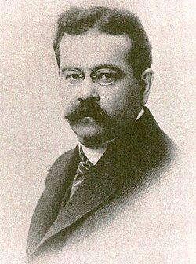

Charles Fort
Writer, 1874 to 1932

An American writer from Albany, New York, who spent years in the New York Public Library and, from 1920 to 1928, the British Museum's reading room, collecting thousands of notes on anomalies that science ignored or explained away. He published them in four books: The Book of the Damned (1919), New Lands (1923), Lo! (1931) and Wild Talents (1932). 1
Decades before the flying saucer era, he suggested that strange lights and objects in the sky might be craft from other worlds, and he was perhaps the first to suggest that some disappearances were abductions by aliens. "I think we're property," he wrote, speculating that something owns the Earth and warns off other visitors. He is credited with coining the word teleportation. 1,2
Admirers founded the Fortean Society in 1931, though he refused to join it, and the magazine Fortean Times has been published since 1973. The word Fortean, for strange phenomena, comes from his name. 1
Open in the interactive Watcher
Related
- The Book of the Damned The Book of the Damned, 1919
- New Lands New Lands, 1923
- Lo! Lo!, 1931
Sources
- Charles Fort Wikipedia
- The Book of the Damned (full text) Charles Fort, via Project Gutenberg, 1919